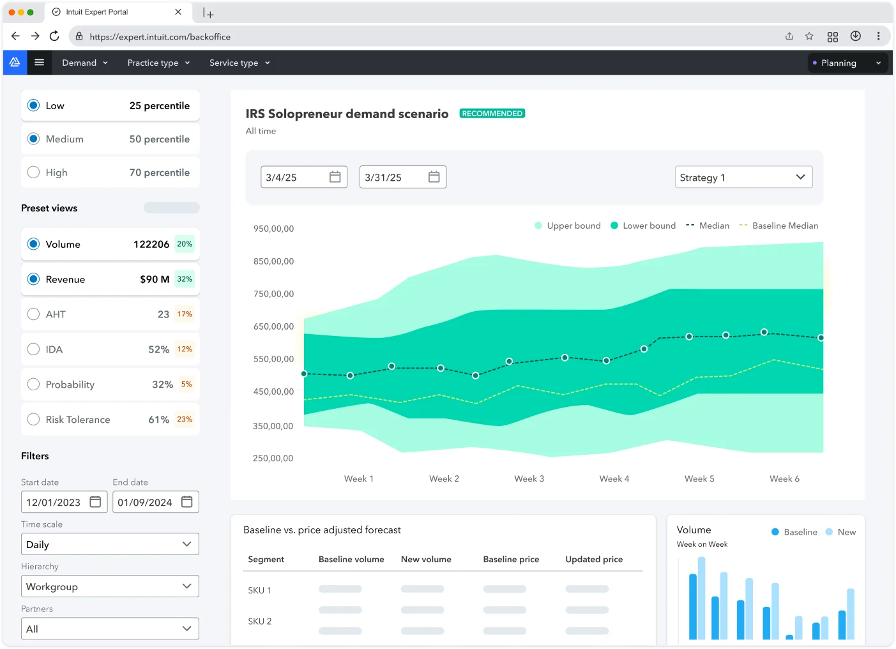
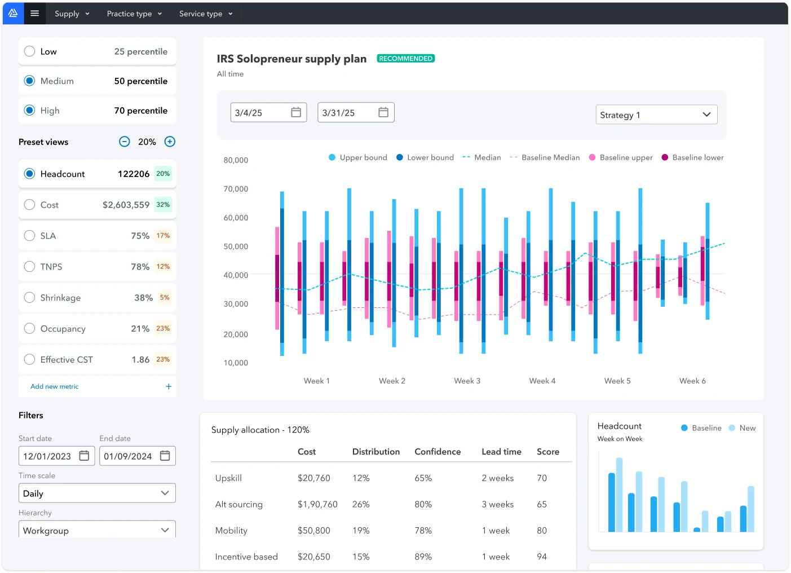
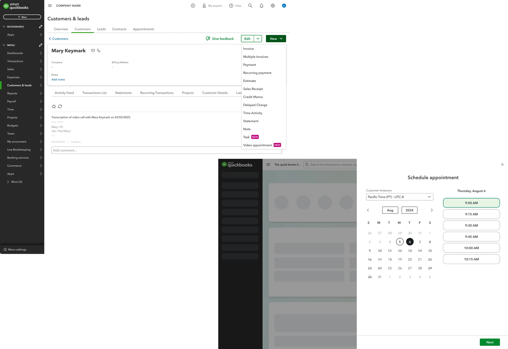

TurboTax Live + QuickBooks Live · Intuit · Group Product Design Manager · FY2025TurboTax Live revenue +47% · Live customers +24% · FY2025
AI and people, at the same time
~26designers, researchers, service designers
~40%lower cost through automation
Intuit's Virtual Expert Platform connects customers with tax and bookkeeping experts. It was growing fast, and it needed rethinking for agentic AI. I moved internally to lead its design.
We had to keep steering the ship while we changed it: serve today's customers and experts, and build for the ones coming.
The work
Connect each customer with the right expert.
Help experts manage their work.
Hand off between AI and people without losing the thread.
AI takes intake, people solve.AI handles intake and matching. Experts take over the problem solving.
AI helps the expert.AI prepares the return. The expert reviews it, adds what's missing, and files it with the customer.
One end-to-end platform.We moved off a set of third-party tools to one end-to-end platform, toward low-touch and no-touch operations.
The handoff model · who holds the thread at each step
MatchPrepareServeSummariseFile
Routes each customer to the right expert by need, profile, capacity and past performance.
Reads the documents, extracts and sorts the data, fills the forms.
Suggests articles, answers and snippets during the call or chat.
Summarises the call, takes notes, and scores it.
Reviews what AI prepared, adds what is missing.
Leads the conversation and solves the problem.
Follows up where it is needed.
Reviews and files with the customer.
AIExpertalongside
Redrawn from Intuit's public description of the platform (Feb 2023).
The teamAbout 26 designers, researchers and service designers. Jason Brightman led four of us; I led autonomous operations, conversation experiences and appointment experiences, and on and off, Intuit Academy.
Span of influenceNine areas across the platform. I led four, and the team touched all of them.
Digital helpExpert managementExpert operationsConversationsExpert app foundationsExpert workspaceService fulfillmentSmart supportSales enablement
ledtouched
+47%TurboTax Live revenue, FY2025
+24%TurboTax Live customers, FY2025
~40%lower cost through automation
TurboTax Live figures: Intuit FY2025 results.
Concept
Fewer hands to get started. More control of their time.
Fewer hands to start. A short intake call; agents do the rest, and similar cases are batched together.More control of their time. Each case arrives ready, with reasoning to share. New agents come with a short training bite.The vision shaped the roadmap and aligned the other teams to the platform.
This one's private. Write to me for the password.Not quite. Try again.
This one's private. Write to me for the password.Not quite. Try again.
Vision, as it travelled to TurboTax and QuickBooks · 2:50 · made by a partner team from our content
This one's private. Write to me for the password.Not quite. Try again.
VEP inside Enterprise Suite, May 2025 · 2:18 · earliest concepts from my team
What we designed · before → after
AI and expert in separate places→One thread, from AI intake to the expert.
Expert starts cold→Case ready, with options and reasoning.
One case at a time→Similar cases lined up, one after another.
Learning off the job→Training bites inside the work.
Shipped

Predicting demand

Matching supply
This one's private. Write to me for the password.Not quite. Try again.
In the workspace: Listen for You · 2:40 · live transcription and suggested answers during the call · by an adjacent team

Appointments, in Enterprise Suite CRM
What it became
Most of the autonomous operations and appointment work shipped. Enterprise Suite adopted Appointments in its CRM. An accounting firm is a small expert network, just like VEP, so opening VEP to firms was an obvious revenue pivot. It happened in parts: Enterprise Suite and Accountant Suite took on appointments and scheduling, and Accountant Suite took on projects. Appointments grew into a product of its own. Giving experts their time back →